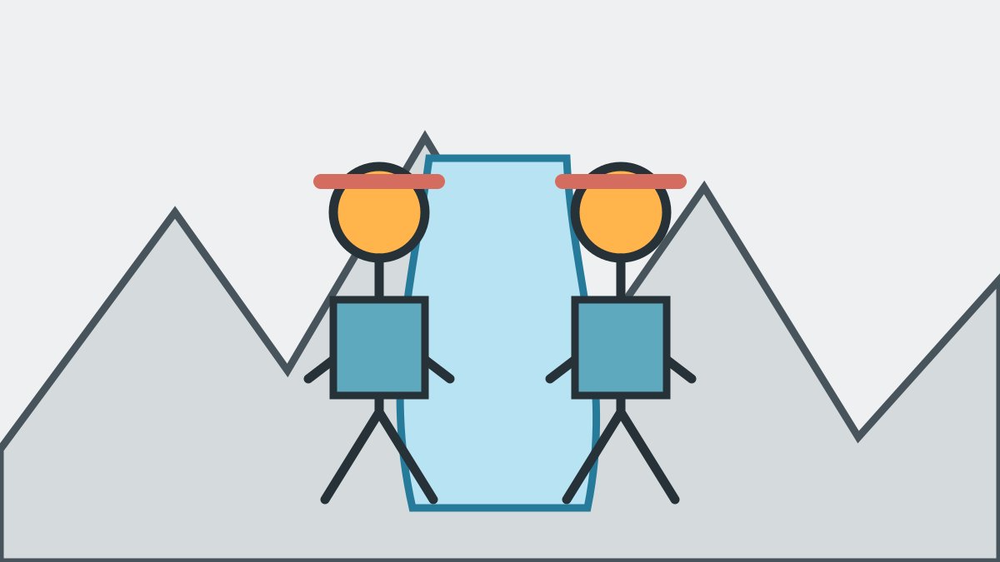

Persönliche Canyoning-Guides und klare Sicherheitsgrundsätze
Canyoning findet in einem Naturraum mit Wasser, Fels und wechselnden Bedingungen statt. Vertrauen entsteht deshalb nicht durch große Versprechen, sondern durch qualifizierte Guides, eine passende Tourwahl, geeignete Ausrüstung und klare Kommunikation.
Tanja und Mario
Ihr schreibt von der ersten Anfrage an direkt mit Tanja und Mario und seid auch in der Schlucht persönlich mit uns unterwegs. Wir sind beide autorisierte Tiroler Schluchtenführer und im Tiroler Bergsportführerverband.


Die Ausbildung Tiroler Schluchtenführer umfasst unter anderem Tourenplanung, Gewässer- und Gefahrenkunde, Wetter, Erste Hilfe, Ausrüstung, Seiltechnik und Führung. Informationen des Tiroler Bergsportführerverbandes.
Sicherheit und vollständige Ausrüstung
Wir beurteilen Wasserstand, Gewitterrisiko und Naturgefahren, wählen die Tour passend zur gesamten Gruppe und erklären jede relevante Technik. Neoprenanzug, Neoprensocken, Helm, Canyoning-Gurt, technisches Material und spezielle Canyoning-Schuhe sind im Preis enthalten.
Unsere wichtigsten Grundsätze
- Die Tour muss zu Schwimmkenntnissen, Fitness und Trittsicherheit der gesamten Gruppe passen.
- Wasserstand, Strömung, Wetterentwicklung und Naturgefahren werden fachlich beurteilt.
- Alle Teilnehmer erhalten eine vollständige Sicherheits-Einweisung.
- Jeder Sprung ist freiwillig und kann umgangen werden.
- Alkohol und berauschende Mittel sind vor und während der Tour ausgeschlossen.
- Die Entscheidung des verantwortlichen Guides ist in Sicherheitsfragen verbindlich.